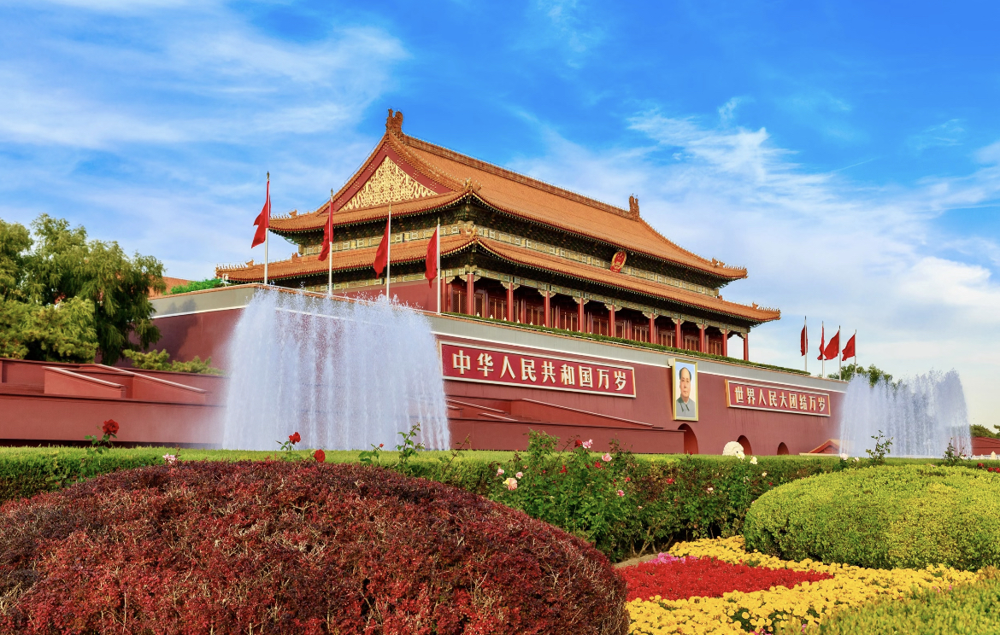
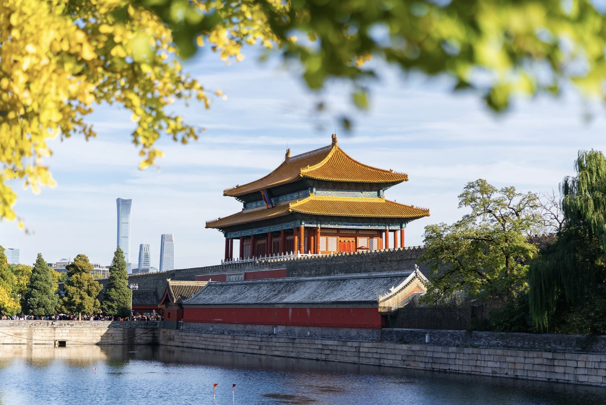
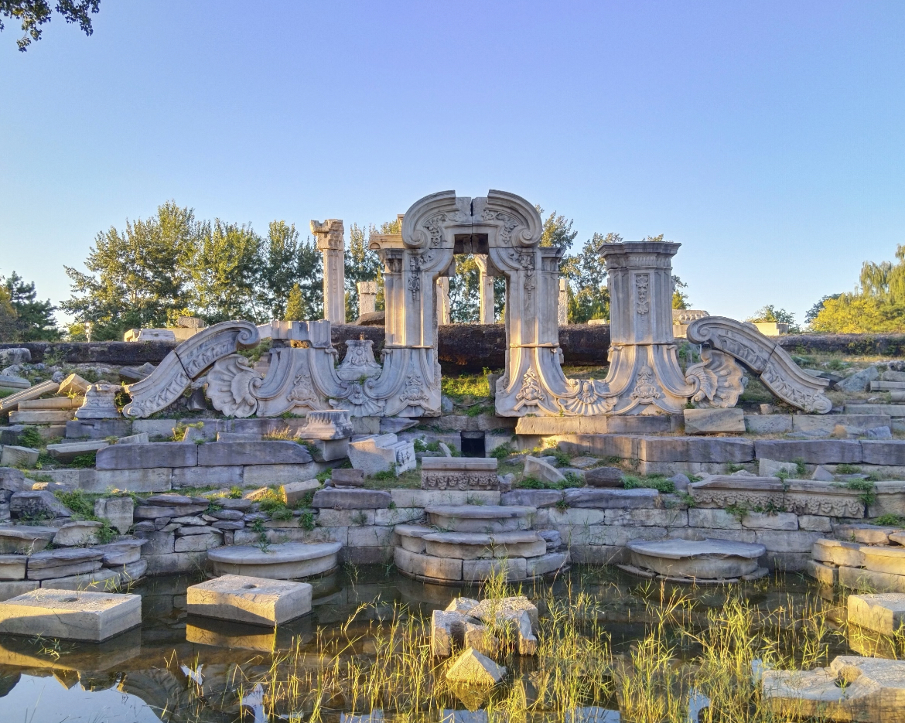
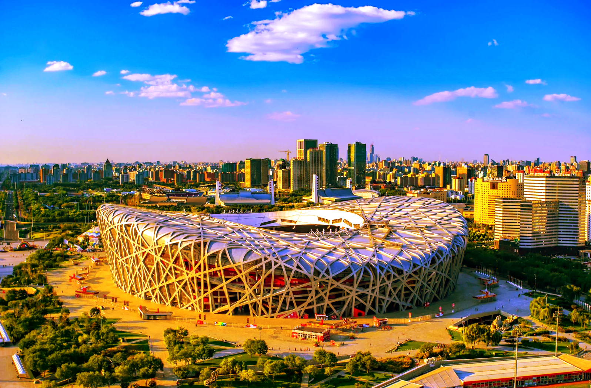
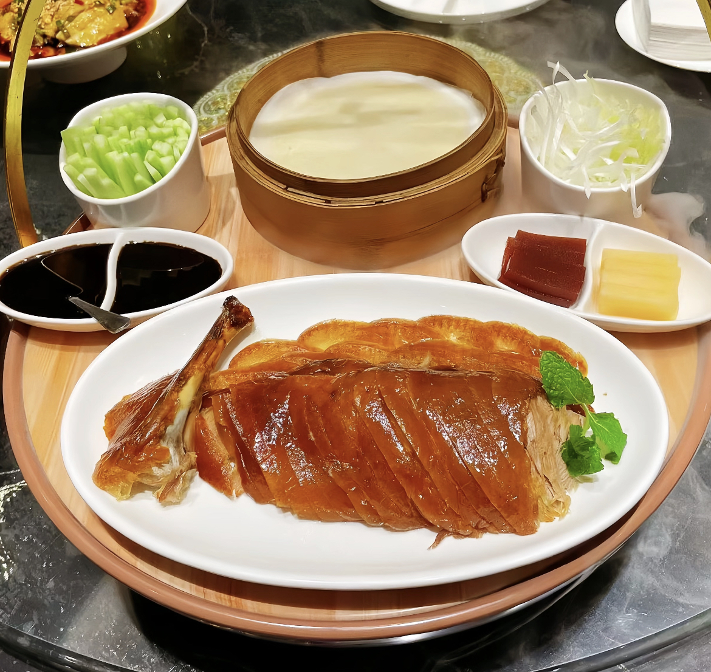
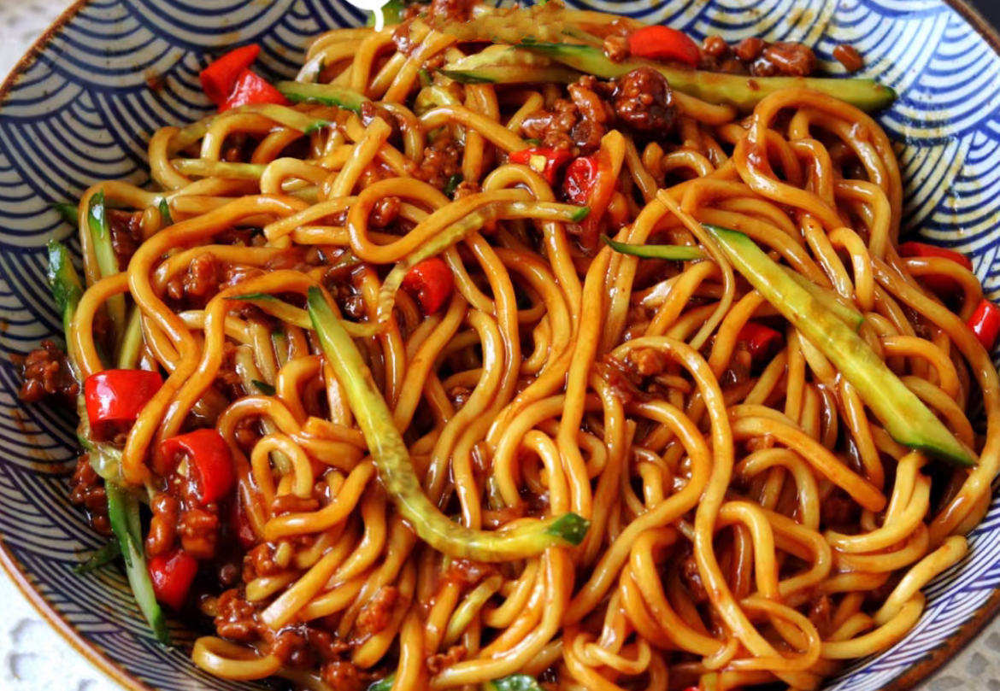
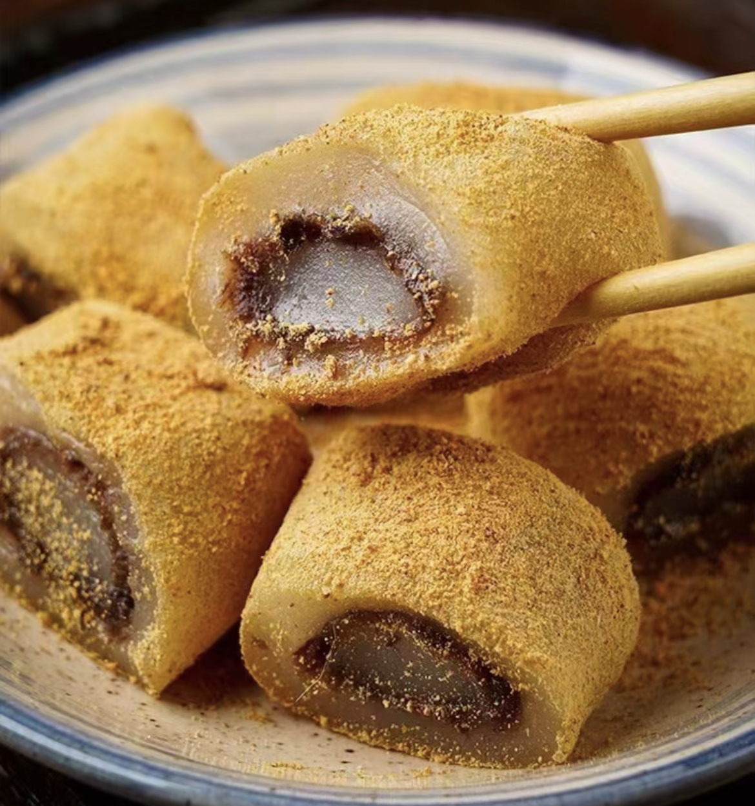
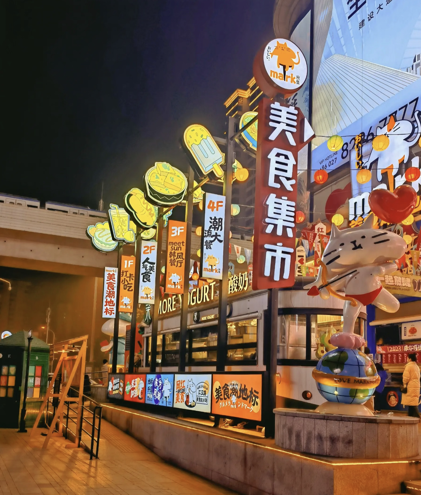

主要景点

天安门广场
历史古迹天安门广场：位于北京中心，是中国的象征，世界上最大的城市中心广场。
开放时间：全天开放
门票：免费

北京故宫
人文景观北京故宫：明清皇家宫殿，世界文化遗产，现存规模最大木质结构古建筑群。
开放时间：全天开放
门票：￥60

圆明园
历史古迹北京圆明园：清代皇家园林，遭劫后成遗址，誉为“万园之园”，国家5A景区。
开放时间：7:00-21:00
门票：￥25
天坛公园
人文景观北京天坛：明清祭天祈谷地，古建筑群宏大，中国现存最大祭祀性建筑群。
开放时间：6:00-17:30
门票：￥45
颐和园
历史古迹北京颐和园：皇家园林，以昆明湖、万寿山为基础，中国园林艺术典范。
开放时间：7:00-17:00
门票：免费

鸟巢
现代建筑2008年北京奥运会主体育场、2022年北京冬奥会和冬残奥会开闭幕式场馆 ，全球首个“双奥开闭幕式场馆”。
开放时间：10：00-22：00
门票：成人普通票￥96起
特色小吃

必吃
北京烤鸭
北京最著名的特产之一，肉质鲜美

地道
北京炸酱面
北京人气小吃，汤鲜味美，温暖滋补

热门
驴打滚
外酥内嫩，馅料十足，是北京人喜爱的早点
美食街区推荐
五道口美食街
汇集各类北京特色小吃，是品尝地道美食的首选之地

前门美食街
百年老街，各类名小吃云集，是北京最具人气的美食街